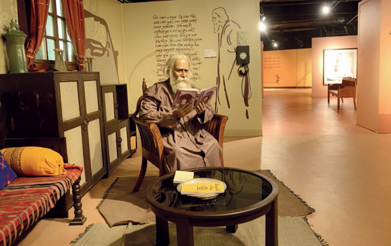
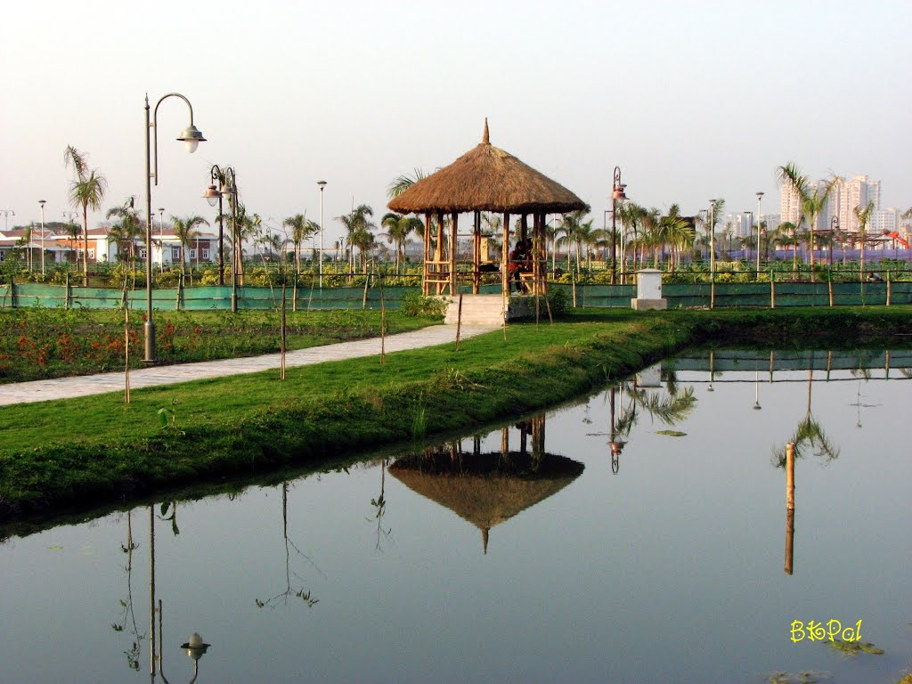
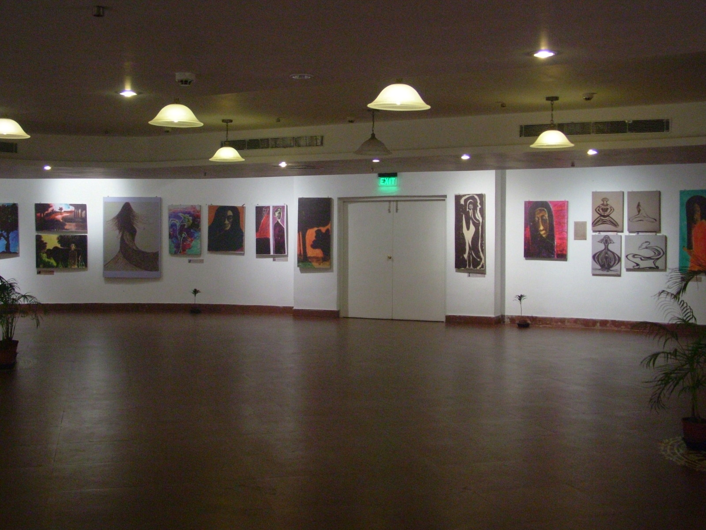
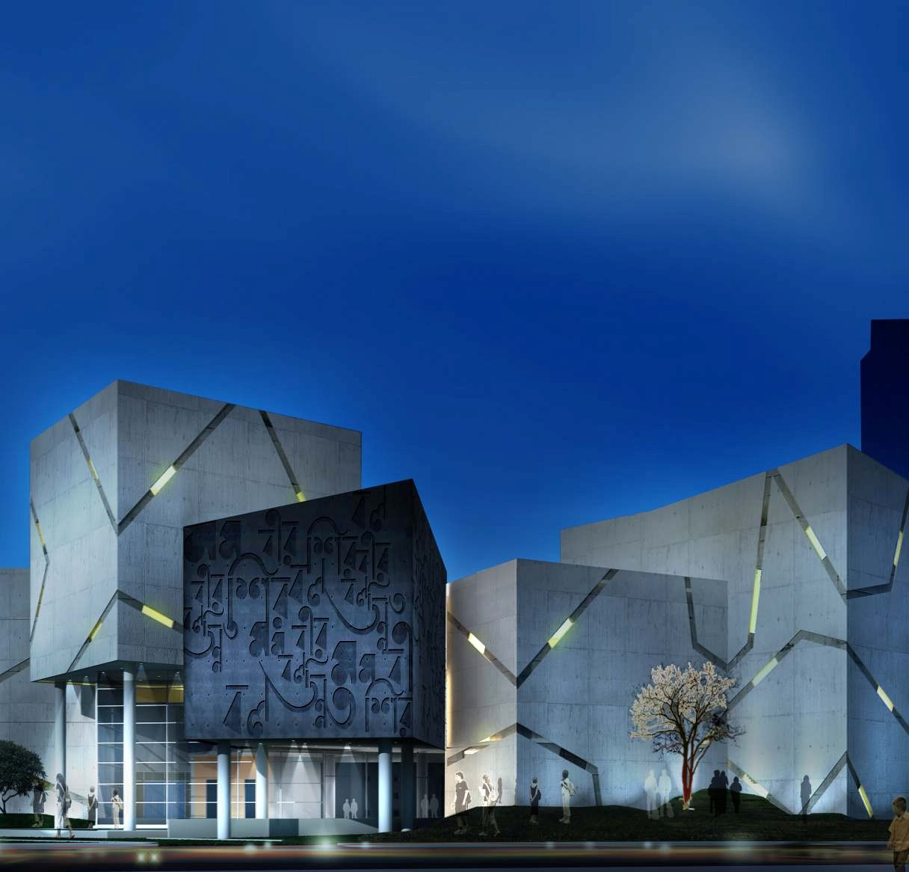

MOTHER'S WAX MUSEUM |
 |
| The Mother’s Wax Museum is set up in the satellite township of Rajarhat New Town. The museum features life-like wax figures of icons and celebrities.It is India's first wax museum, and has been made on the lines of the world-famous Madame Tussauds.
The Mother’s Wax Museum pays homage to towering talents of the country. The wax figures have been created by Susanta Ray, a veteran wax sculptor. The museum occupies the sixth floor of the New Town Financial Hub, opposite the sprawling Eco-Tourism Park.
(Timings:12:00 a.m.-7:30 p.m. except Monday Fees: Rs.150/person) |
|  | ECO TOURISM PARK |
| New Town Eco Park is an urban park in Rajarhat, Kolkata. The park is situated on a 480 acres (190 ha) plot and is surrounded by a 104 acres (42 ha) waterbody with an island in the middle.
The park has been divided into three broad parts: ecological zones like wetlands, grasslands, and urban forest, theme gardens and open spaces, and urban recreational spaces.
(Timing: Sunday-12:00 p.m.-8:30 p.m. Tuesday-Saturday-2:00 p.m-8:30 p.m. Fees: Rs.20/person) |
RABINDRA TIRTHA |
 |
| Rabindra Tirtha Complex (Tagore Pilgrimage) is a cultural center in Narkel Bagan, New Town, Kolkata. It is dedicated to Rabindranath Tagore.It is a project developed by the HIDCO It houses an exhibition of Tagore’s paintings, archives, a research centre, an auditorium and dormitories for students opting to conduct their research on Tagore.
(Timing: Weekdays- 2:00 p.m.-8:00 p.m. Sunday- 12:00 p.m.-8:00 p.m. Fees: Rs.10/person) |
|  | NAZRUL TIRTHA |
| Nazrul Tirtha (Nazrul Pilgrimage) is a cultural and educational center dedicated to the rebel poet Kazi Nazrul Islam. The center is situated at Action Area 1, New Town (few meters away from Rabindra Tirtha). It was inaugurated on 24 May 2014 to mark the occasion of the 115th birth anniversary of the poet.
|